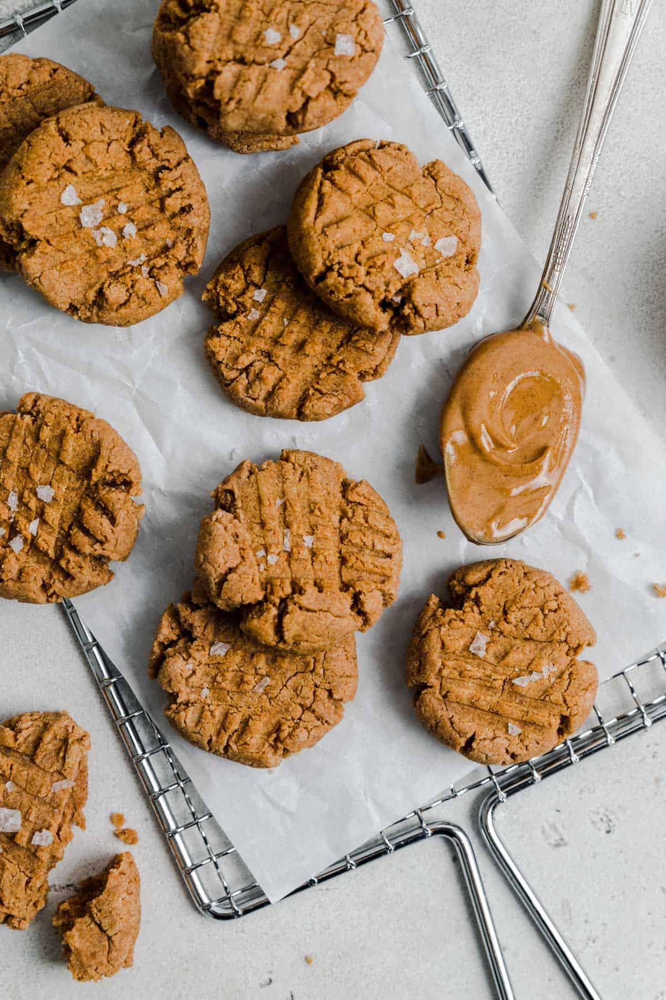

Peanut Butter Protein Cookies

Ingredients
- 1/2 cup powdered peanut butter (pb2)
- 1/4 cup water
- 1/4 cup maple syrup
- 1/4 cup natural peanut butter
- 1 tsp vanilla
- 1/3 cup oat flour
- 2 tbsp vanilla protein powder
- 1 tsp baking powder
- sea salt flakes
Directions
- Preheat oven to 350F and line baking sheet with parchment paper.
- In a medium bowl, whisk together half of the peanut butter powder and the water. Then add in maple syrup, peanut butter, and vanilla. Whisk until combined.
- In a small bowl, use a spatula to mix together oat flour, rest of peanut butter powder, protein powder, and baking powder.
- Add the dry ingredients to wet and stir until dough forms.
- Using a cookie scoop or your hands, roll into balls about 1.5 tbsp worth of dough. Flatten with the back of a wet fork. There should be around 14 cookies.
- Bake for 8-9 minutes or until golden. Once cooled, top with sea salt.
Back to Main Menu